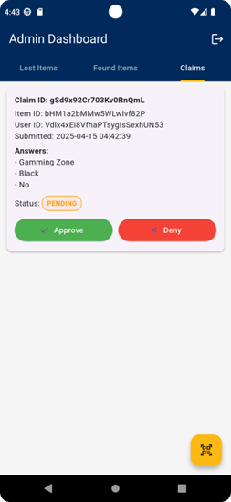
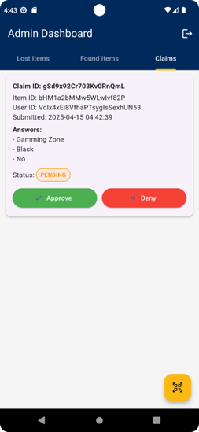
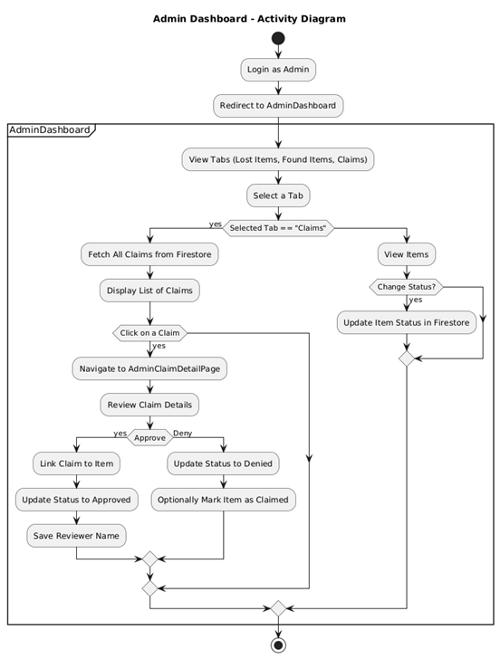
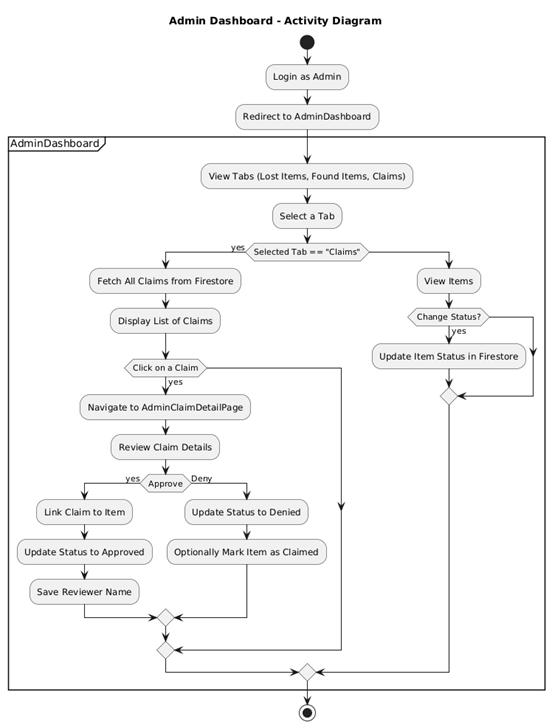

Projects
⬅ Go BackRemote-Controlled Car
• Assembled and programmed a 4WD smart car to autonomously navigate a maze using C, integrating ultrasonic sensors and remote-control features.
• 3D-modeled the car components in SolidWorks.
• Debugged real-time navigation issues and collaborated in a team of 2 to complete simulation, testing, and live demonstration.
Ambient Light Detector
• Designed and built an ambient light detector in a team of 2, using an LM358 op-amp, LDR sensor, and adjustable potentiometer for dynamic light threshold comparison.
• Integrated the circuit output with an FPGA using Vivado and implemented voltage divider logic to control LED output and ensure safe current levels.
Tic Tac Toe on Raspberry Pi
• Built a GUI-based Tic Tac Toe game in Python with Player vs Player, Weak AI, and Minimax AI modes using Tkinter.
• Implemented networked multiplayer using Python sockets and synced game data to Google Sheets via Flask and Google Cloud API.
• Designed a normalized MySQL database to track players, moves, and game outcomes.
• Collaborated in a team of 2, focusing on backend integration, cloud connectivity, and gameplay logic.
Humber FindIt - Lost & Found Mobile App
 

• Built a Flutter app with Firebase (Auth, Firestore, Storage) to digitize Humber College’s lost and found system.
• Implemented key features: item reporting, admin dashboard, claim submission with QR code verification.
• Led backend tasks: image uploads, claim logic, QR scanning, and Firestore structuring using Clean Architecture.
• Collaborated in a team of 4, contributing to system design, testing, and Agile project planning.
Humber FindIt - Software Engineering Project
 

• Produced full Software Requirements Specification (SRS) and documented Clean Architecture and modular design.
• Designed comprehensive UML diagrams: use case, sequence, class, state, activity, and deployment diagrams.
• Developed detailed algorithm flows, system models, and testing plans to support implementation.
• Worked as a team of 2, sharing responsibilities for documentation, modeling, and Agile project management.
Intrusion Detection and Prevention System (IDPS) - ARP Spoofing Simulation
• Developed a Python-based IDPS to detect and block ARP spoofing attacks using Scapy and iptables.
• Programmed both the ARP spoofing attack script and defense script to simulate and mitigate man-in-the-middle attacks.
• Enhanced real-time logging, ARP table restoration, and IP blocking in a virtualized lab.
• Worked in a team of 2, co-developed scripts, and shared simulation and reporting tasks
University Campus Network Design & SDN integration
• Simulated a dual-campus network in Cisco Packet Tracer with VLANs, trunking, and static routing for full inter-campus communication.
• Verified connectivity via ping tests, MAC table checks, and CLI troubleshooting; configured router-on-a-stick for inter-VLAN routing.
• Integrated SDN using Mininet and OpenDaylight for dynamic flow control and tested OpenFlow connectivity.
• Collaborated in a team of 4 on design, implementation, and SDN integration.